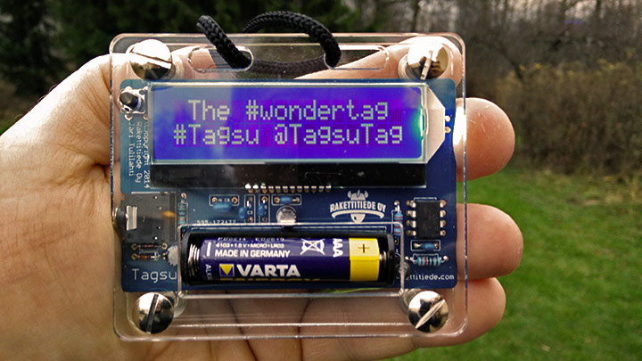
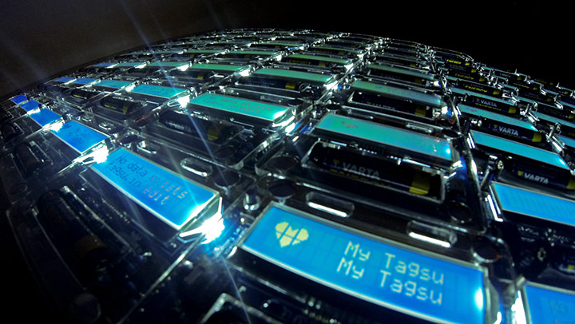
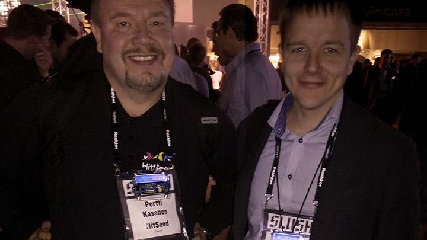
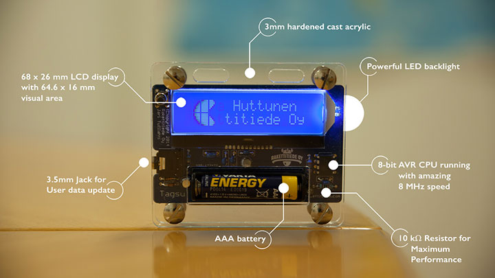
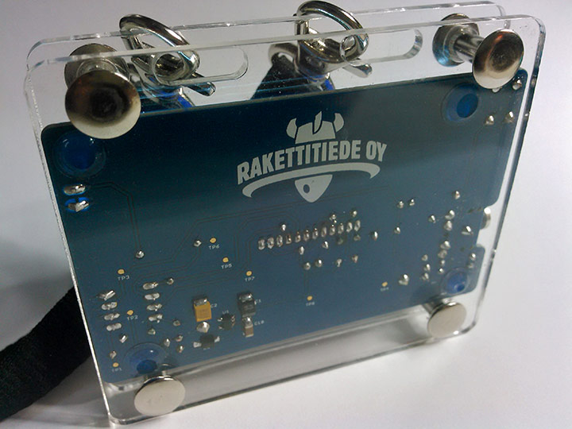

Introducing Tagsu the programmable, wearable #wondertag!
Tagsu is a programmable, wearable message tag that makes it easier to start a conversation, and to do so in an innovative, creative way. It does not take itself too seriously yet generates some serious interest — Tagsu brings people together and gives everyone a unique, personalised way to communicate.

Tagsu is a niche, one-of-a-kind, digital message tag that you can wear simply for fun, to parties, to sports events, to networking events, and anywhere you want to stand out in a crowd.

When meeting new people at events, it can be awkward. Wear a Tagsu and meet people like never before. Get noticed. Intrigue people. Be remembered!

Using Tagsu
Connect your Tagsu to your computer or phone with the in-box audio cable and open the screen editor. Type in anything you would like your Tagsu to display — your name, number, social media handles, ridiculous quotes, crazy jokes (anything!) — and send it over the cable. It is a 16×2 message tag with 42 screens.
- Fully programmable (data transfers over the audio cable)
- Animated & backlit display
- Circuit board in blue (with white silkscreen print)
- Powered by one AAA battery
- Custom branding with logo for high-volume orders
- Premium circuit board colours for high-volume orders: blue, red, black, white (with black silkscreen print)

Tagsu specs
| Weight | 3.53 oz / 100 g, including battery |
| Dimensions | 86 × 74 × 15 mm |
| Casing | 3 mm cast and hardened clear acrylic |
| Display | 16 × 2 characters, backlit blue LCD with white text |
| CPU | ATtiny85, 8-bit, 512 bytes RAM, 8192 bytes Flash |
| User data memory | 42 full screens (32 characters), 10 user-definable logos (15 × 16 pixels) |
| Built-in icons | 10 |
| User interface | Single pushbutton to change settings |
| Audio connector | 3.5 mm jack |
| User data interface | Data updated using the audio connector |
| User data editor | Web application to edit text and logos |
| Runtime | Up to 52 hours on one battery (runtime varies) |
